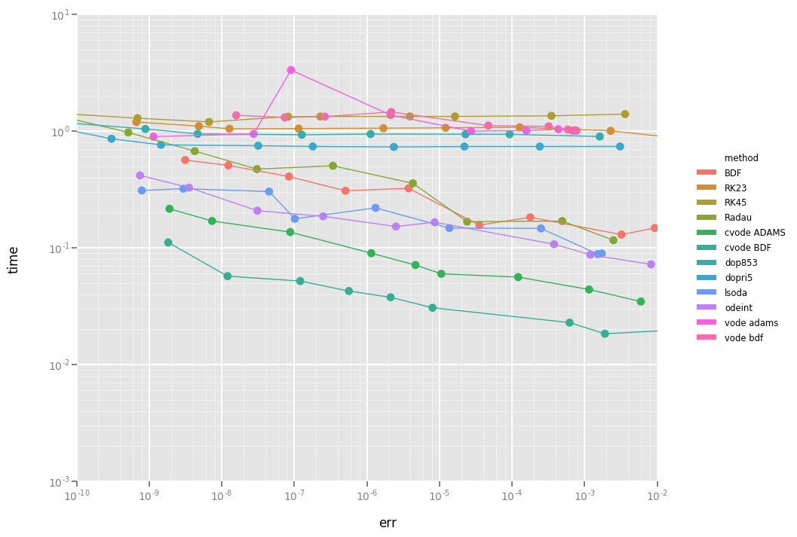

ODES: a high level interface to ODE and DAE solvers
Repository link »
PDF link »
View review issue »

Published: 23 February 2018
Malengier et al., (2018). ODES: a high level interface to ODE and DAE solvers. Journal of Open Source Software, 3(22), 165. https://doi.org/10.21105/joss.00165
Summary
ODES is a scikit offering extra ODE/DAE solvers, as an extension to what is available in SciPy (Jones et al. 2001), with a high level interface.
ODES offers a high level object oriented API to Differential Equation solving in Python. The backbone of ODES is the SUNDIALS package (Hindmarsh et al. 2005), which offers ODE and DAE solvers with root finding, preconditioning, error control and more. ODES can be used in Python 2.7 or 3.3-3.6, while for speed purposes the integrator can be a Cython function instead of a pure Python function. Comparison between different methods for a test problem is given in following graph:  You can generate above graph via the Performance notebook.
As ODES is a Python package, much thought has been given on ease of use. On one hand, novices can use the odeint convenience function, see example use in simple.py. On the other hand, an object oriented interface is available via the ode and dae objects. See the Documentation for details.
For users new to solving ODEs, we recommend reading through Hairer, Norsett, and Wanner (1993), which contains useful advice to find successful solutions.
References
Hairer, E, S.P. Norsett, and G. Wanner. 1993. Solving Ordinary Differential Equations I. Nonstiff Problems. Springer Series in Computational Mathematics. Springer-Verlag.
Hindmarsh, Alan C, Peter N Brown, Keith E Grant, Steven L Lee, Radu Serban, Dan E Shumaker, and Carol S Woodward. 2005. “SUNDIALS: Suite of Nonlinear and Differential/Algebraic Equation Solvers.” ACM Transactions on Mathematical Software (TOMS) 31 (3). ACM:363–96. https://doi.org/10.1145/1089014.1089020.
Jones, Eric, Travis Oliphant, Pearu Peterson, and others. 2001. “SciPy: Open Source Scientific Tools for Python.” http://www.scipy.org/.